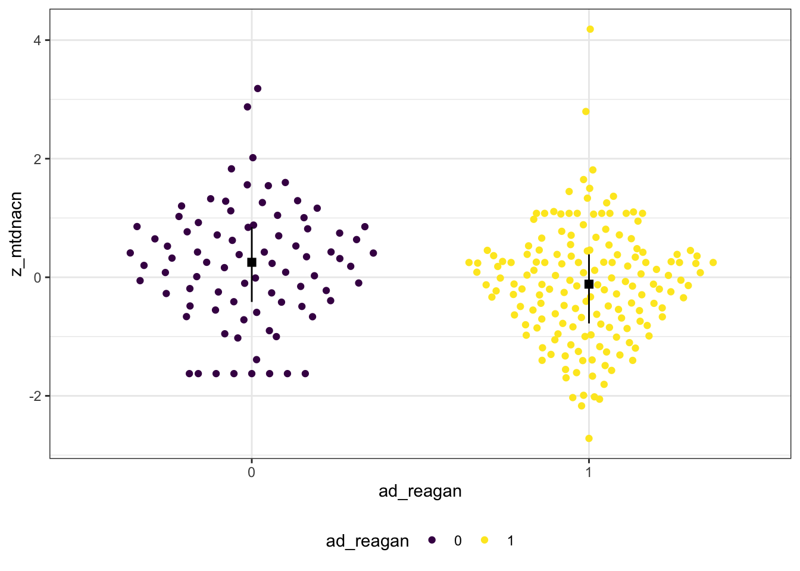
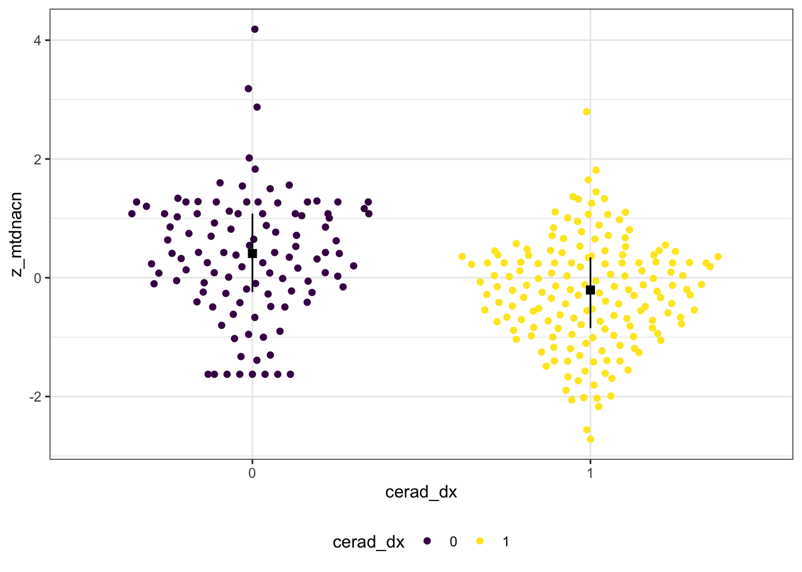

6.2 MSBB
6.2.1 Data Wrangling
- Exclude individules who are not non-hispanic whites
- Exclude individules with non-European haplogroups
- Dichotomize CERAD dx
6.2.2 NIA-Reagan
msbb_path_res <- glm(ad_reagan ~ z_mtdnacn + macro + aod + sex + apoe4,
family = "binomial", data = msbb_df)| term | estimate | std.error | statistic | p.value |
|---|---|---|---|---|
| (Intercept) | -2.345 | 1.546 | -1.516 | 0.129 |
| z_mtdnacn | -0.272 | 0.145 | -1.873 | 0.061 . |
| macroJ | 0.099 | 0.499 | 0.199 | 0.842 |
| macroK | 0.337 | 0.373 | 0.904 | 0.366 |
| macroT | 0.876 | 0.631 | 1.387 | 0.165 |
| macroU | 0.771 | 0.562 | 1.372 | 0.17 |
| macroV | 0.940 | 0.615 | 1.527 | 0.127 |
| macroIWX | 0.859 | 0.840 | 1.023 | 0.306 |
| aod | 0.027 | 0.017 | 1.601 | 0.109 |
| sexM | 0.411 | 0.340 | 1.210 | 0.226 |
| apoe4e4+ | 0.792 | 0.319 | 2.483 | 0.013 * |

Figure 6.1: mtDNAcn by NIA-Regan dx
## # A tibble: 10 x 5
## term estimate std.error statistic p.value
## <chr> <dbl> <dbl> <dbl> <dbl>
## 1 (Intercept) -2.35 1.53 -1.54 0.125
## 2 macroJ 0.0649 0.492 0.132 0.895
## 3 macroK 0.341 0.370 0.920 0.357
## 4 macroT 0.888 0.624 1.42 0.155
## 5 macroU 0.868 0.557 1.56 0.119
## 6 macroV 0.960 0.615 1.56 0.119
## 7 macroIWX 0.847 0.843 1.00 0.316
## 8 aod 0.0269 0.0170 1.59 0.113
## 9 sexM 0.442 0.338 1.31 0.191
## 10 apoe4e4+ 0.869 0.314 2.76 0.00569## # A tibble: 10 x 5
## term estimate std.error statistic p.value
## <chr> <dbl> <dbl> <dbl> <dbl>
## 1 (Intercept) -1.21 1.42 -0.849 0.396
## 2 macroJ -0.422 0.401 -1.05 0.293
## 3 macroK 0.693 0.346 2.00 0.0451
## 4 macroT 0.971 0.564 1.72 0.0851
## 5 macroU 2.28 0.767 2.97 0.00294
## 6 macroV 0.989 0.566 1.75 0.0804
## 7 macroIWX 0.769 0.721 1.07 0.286
## 8 aod 0.0119 0.0159 0.749 0.454
## 9 sexM 0.255 0.299 0.854 0.393
## 10 apoe4e4+ 0.433 0.276 1.57 0.116## # A tibble: 10 x 5
## term estimate std.error statistic p.value
## <chr> <dbl> <dbl> <dbl> <dbl>
## 1 (Intercept) 1.82 0.616 2.96 0.00335
## 2 macroJ -0.422 0.182 -2.32 0.0212
## 3 macroK -0.247 0.152 -1.62 0.105
## 4 macroT -0.113 0.237 -0.478 0.633
## 5 macroU -0.0428 0.214 -0.200 0.842
## 6 macroV 0.0168 0.235 0.0716 0.943
## 7 macroIWX -0.620 0.307 -2.02 0.0446
## 8 aod 0.00632 0.00689 0.918 0.360
## 9 sexM -0.443 0.128 -3.46 0.000637
## 10 apoe4e4+ 0.275 0.118 2.33 0.02066.2.3 CERAD
msbb_cerad_res <- glm(cerad_dx ~ z_mtdnacn + macro + aod + sex + apoe4,
family = "binomial", data = msbb_df)| term | estimate | std.error | statistic | p.value |
|---|---|---|---|---|
| (Intercept) | -1.712 | 1.502 | -1.140 | 0.254 |
| z_mtdnacn | -0.643 | 0.151 | -4.249 | 2.1e-05 *** |
| macroJ | -0.176 | 0.420 | -0.419 | 0.675 |
| macroK | 0.749 | 0.360 | 2.080 | 0.038 * |
| macroT | 0.940 | 0.598 | 1.571 | 0.116 |
| macroU | 2.211 | 0.782 | 2.826 | 0.005 ** |
| macroV | 1.010 | 0.576 | 1.752 | 0.08 . |
| macroIWX | 0.867 | 0.731 | 1.186 | 0.236 |
| aod | 0.017 | 0.017 | 1.046 | 0.296 |
| sexM | 0.329 | 0.312 | 1.054 | 0.292 |
| apoe4e4+ | 0.378 | 0.289 | 1.304 | 0.192 |

Figure 6.2: mtDNAcn by CERAD dx